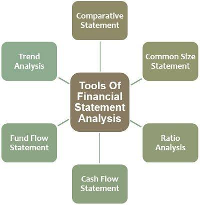
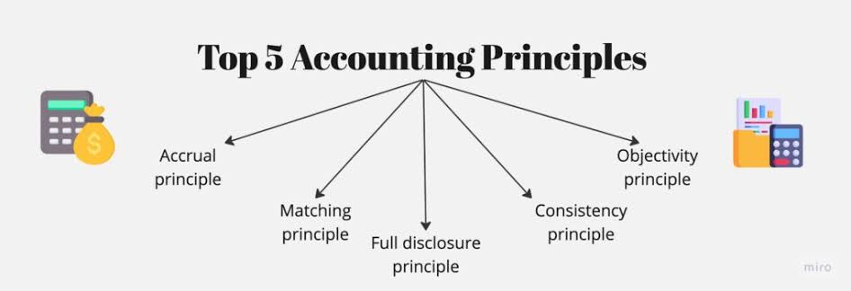
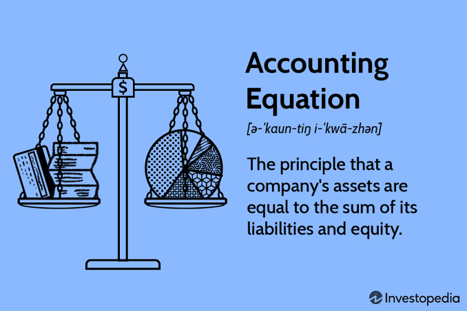
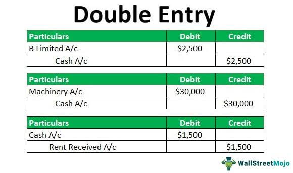
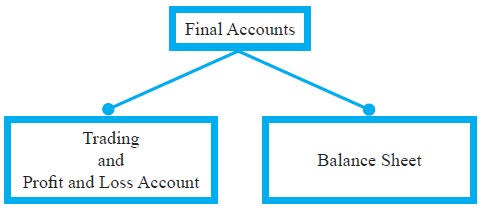

Financial accounting helps businesses, governments, and individuals understand money, make decisions, and report performance with clarity and accuracy.
Introduction to Financial Accounting
Financial accounting is the process of recording, classifying, summarizing, and reporting business transactions in a structured way. It provides reliable information about a company’s financial position, profitability, and cash movement to owners, managers, investors, creditors, and government agencies. The main purpose of financial accounting is to communicate the results of business operations in a form that can be understood and used for decision-making. It is based on a set of recognized principles, rules, and standards that ensure the information is consistent, comparable, and trustworthy.
The foundation of financial accounting lies in the double-entry system, which requires every transaction to affect at least two accounts. This system makes accounting more accurate because it ensures that the books remain balanced. Financial accounting is different from managerial accounting because it focuses on reporting information for external users, while managerial accounting is more concerned with internal planning and control. In practice, financial accounting produces essential reports such as the income statement, balance sheet, and cash flow statement.
Financial accounting turns daily business transactions into clear reports that guide trust and decision-making.
Accounting Concepts and Principles
Accounting concepts are the basic assumptions and rules that guide the preparation of financial statements. These principles help accountants record transactions in a uniform and logical way. Some of the most important accounting concepts are the business entity concept, the going concern concept, the accrual concept, the money measurement concept, and the consistency concept. These ideas define the framework within which accounting information is prepared and interpreted.
The business entity concept treats the business as separate from its owner. This means that the owner’s personal transactions are not mixed with the business transactions. The going concern concept assumes that the business will continue operating for the foreseeable future unless there is evidence to the contrary. The money measurement concept states that only transactions that can be expressed in monetary terms are recorded. The accrual concept requires revenue and expenses to be recognized when they are earned or incurred rather than when cash is received or paid. The consistency concept demands that accounting methods should be applied uniformly from one period to another so that results can be compared fairly.

Accounting principles provide the structure that keeps financial reporting honest, consistent, and meaningful.
Business entity concept
The business entity concept is one of the most important ideas in accounting. It says that a business is a separate organization from its owner and should therefore maintain its own records. For example, if the owner withdraws money from the business for personal use, that withdrawal is not treated as an expense of the business but as a drawing or owner withdrawal. This principle is important because it helps show the true financial position of the business rather than the personal finances of the owner.
This concept also supports accountability and transparency because it makes it possible to evaluate the performance of the business independently. Without this principle, it would be difficult to know whether the business is profitable or whether the owner’s private activities are affecting the records. It is often applied in sole proprietorships, partnerships, and limited liability companies because it clarifies ownership and responsibility.
The business entity concept keeps personal and business finances clearly separated.
Going concern concept
The going concern concept assumes that the business will continue operating in the future unless there is evidence that it will close down. This assumption is important when preparing financial statements because assets are normally recorded at cost and not at liquidation value. If management expects the business to cease operating, then a different approach may be used. The going concern concept supports the preparation of long-term financial reporting and influences decisions about depreciation, valuation, and the classification of assets and liabilities.
A business that is financially healthy and expected to continue trading is treated as a going concern. This assumption gives confidence to investors and creditors because they can evaluate the business as an ongoing enterprise rather than as a wound-up entity.
The going concern concept assumes continuity, which is essential for long-term financial reporting.
Accrual concept
The accrual concept states that income should be recorded when it is earned, and expenses should be recorded when they are incurred, regardless of when cash is exchanged. This is important because cash transactions alone do not always show the true financial performance of a business. For example, if a business sells goods on credit, the revenue is recognized even if payment has not yet been received. Similarly, if the business receives electricity in the current period but pays for it later, the expense must still be recognized in the current period.
The accrual concept gives a more accurate picture of profitability and financial position. It helps users compare performance fairly across accounting periods and makes the financial statements more useful for planning and control.
The accrual concept matches income and expenses to the period in which they are earned or incurred.
Consistency concept
The consistency concept means that once an accounting policy is adopted, it should be followed from one period to the next unless there is a valid reason to change it. This ensures that the figures in the financial statements can be compared over time. If a business changes its method of depreciation or inventory valuation, the change must be disclosed and explained. Consistency improves reliability because users can tell whether changes in results are due to real business performance or merely changes in accounting approach.
Consistency allows financial statements to be compared fairly over time.
Accounting Equation and Financial Statements
The accounting equation is the core of financial accounting. It states that assets are equal to liabilities plus owner’s equity. This equation must always remain balanced after every transaction. The accounting equation provides the basis for the balance sheet and helps ensure that all transactions are recorded accurately. When a business buys equipment by cash, assets may change but the total remains balanced; when the business borrows money, liabilities increase and the equation remains in balance.
Financial statements are the main output of accounting. The balance sheet shows the financial position of the business at a point in time. The income statement shows profit or loss over a period. The cash flow statement explains how cash moved during the period. Together, these statements provide a complete picture of a business’s financial health.

The accounting equation is the balance point that keeps every financial report in order.
Accounting equation
The accounting equation is the foundation of the double-entry system. It reflects the relationship between assets, liabilities, and capital. If a business acquires a new asset by cash, one asset decreases while another asset increases, leaving the equation unchanged. If the business obtains a loan, both assets and liabilities rise. If it earns income, assets may increase and equity may also rise because profit increases capital. Every transaction affects the equation in a way that keeps it balanced.
Every transaction must preserve the balance of the accounting equation.
Balance sheet
The balance sheet is a statement of financial position. It lists the business’s assets, liabilities, and capital at a specific date. Assets are resources owned by the business, such as cash, inventory, buildings, and accounts receivable. Liabilities are obligations to outsiders, such as loans and unpaid bills. Capital is the owner’s investment in the business plus retained profit. A balance sheet is important because it shows whether the business has enough resources to meet its obligations.
The balance sheet reveals what the business owns, owes, and is worth at a given date.
Income statement
The income statement shows whether the business made a profit or loss over a given period. It records revenue from sales and other income, then subtracts the expenses incurred to operate the business. The result is either a profit or a loss. It is often prepared monthly, quarterly, or annually. The income statement helps owners and investors understand whether the business is profitable and how efficiently it is operating.
The income statement measures business performance over a period of time.
Cash flow statement
The cash flow statement tracks the inflow and outflow of cash in the business. It is divided into operating, investing, and financing activities. This statement is essential because profit does not always mean cash is available. A business may be profitable but still face liquidity problems if it does not collect cash promptly or has heavy capital expenditure. The cash flow statement helps management plan liquidity and avoid cash shortages.
The cash flow statement shows whether cash is moving in a healthy and sustainable way.
Double Entry System
The double entry system is the backbone of financial accounting. Every transaction is recorded in at least two accounts, with one account debited and another credited. This method creates a balanced record and helps detect errors. It is used because a single entry would not show the full effect of a transaction. For example, when cash is received from sales, cash increases and sales revenue increases. One account is debited and another is credited.
The system ensures that the total debits equal the total credits in the books of account. It produces complete records and supports the preparation of trial balances and financial statements. The double entry system is also the basis for internal control because it creates a check against mistakes and fraud.

The double entry system ensures that every transaction is recorded with balance and accountability.
Debit and credit rules
In accounting, debits and credits are the two sides of every transaction. Assets and expenses normally increase on the debit side, while liabilities, capital, and income normally increase on the credit side. These rules are essential for posting transactions correctly. A debit entry does not always mean a decrease; it depends on the type of account involved. The same is true for credit entries. Understanding these rules is necessary for accurate journalizing and ledger posting.
Debits and credits are the language used to record every business transaction.
Journal and ledger
The journal is the first book of account where transactions are recorded in chronological order. Each journal entry includes the date, the accounts affected, the amounts, and a narration explaining the transaction. The ledger is the second stage of the recording process, where entries from the journal are transferred to individual accounts. The ledger shows the balance of each account and is used to prepare the final statements. The journal provides the story of transactions, while the ledger provides the structure of account balances.
The journal records the transaction, and the ledger organizes it into account balances.
Trial balance
A trial balance is a statement that lists all ledger balances to check whether total debits equal total credits. It helps identify errors in recording before the financial statements are prepared. If the totals do not agree, the accountant must investigate the mistake. Although the trial balance does not guarantee that all errors are eliminated, it is an important step in the accounting cycle.
The trial balance is a checkpoint that confirms whether the books are mathematically balanced.
Bank reconciliation
Bank reconciliation compares the cash balance shown in the business records with the balance shown in the bank statement. Differences may arise because of outstanding cheques, deposits in transit, bank charges, or errors. Reconciliation is essential because it helps detect fraud, identify missing entries, and ensure that the cash balance is correct. It is one of the most practical control procedures in accounting.
Bank reconciliation ensures that the cash balance in the books matches the bank records.
Final Accounts and Adjustments
Final accounts are the accounts prepared at the end of the accounting period to determine the profit or loss and the financial position of the business. They include the trading account, profit and loss account, and balance sheet. These statements are prepared after recording closing entries and adjusting items such as depreciation, accruals, prepayments, bad debts, and provisions for doubtful debts. Final accounts present the business results in a formal and final format.
Adjustments are necessary because some expenses and incomes relate to the current accounting period even if the cash has not been received or paid yet. Without adjustment, the accounts would not provide a fair view of performance. The final accounts therefore reflect the true financial state of the business.

Final accounts summarize the business performance and financial position at the end of the period.
Trading account
The trading account is prepared to determine the gross profit or gross loss of the business. It shows the cost of goods sold and the sales revenue for the period. It includes opening stock, purchases, carriage inwards, and closing stock. The trading account helps the business understand how much profit it made from buying and selling goods before considering operating expenses.
The trading account measures the direct profit from buying and selling activities.
Profit and loss account
The profit and loss account is prepared to determine the net profit or net loss after taking into account all operating expenses and incomes. It begins with gross profit from the trading account and then adds other income and subtracts expenses such as rent, salaries, insurance, and depreciation. The final figure tells the owner whether the business earned a profit or suffered a loss during the period.
The profit and loss account shows the overall performance of the business after all costs are considered.
Balance sheet preparation
The balance sheet is prepared after the income statement so that the profit or loss can be transferred to capital. It presents the assets, liabilities, and capital of the business at the end of the accounting period. The balance sheet is the final statement that communicates the financial position of the business. It helps users see whether the company is solvent and whether it can meet its obligations.
The balance sheet gives a snapshot of the financial strength of the business.
Depreciation and provisions
Depreciation is the gradual reduction in the value of a fixed asset due to use, age, or obsolescence. It is recorded as an expense because assets lose value over time. Common methods of depreciation include the straight-line method and the reducing balance method. Provisions are amounts set aside for anticipated losses or expenses, such as bad debts or repairs. These adjustments ensure that profits are not overstated and that future obligations are properly recognized.
Depreciation and provisions ensure that financial statements reflect realistic values and future obligations.